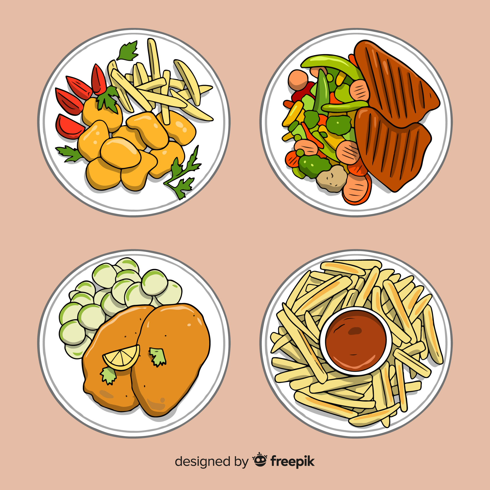

Milanesa Napolita

Aqui tenemos una milanesa en formato ilustrado
te enseñaremos a cocinar una deliciosa milanesa napolitana argentina
aqui veras la recete de la abuela lo mas delicioso que vas a encontrar aqui en esta pagina
años y años de experiencia cocinando para sus 7 nietos
bueno ya termine este parrafo
Ingredientes
- carne de novillito fileteada
- pan rayado
- 2 huevos
- sal a gusto
- peregil
- aceite de girasol
- ajo
pasos a seguir
- agregar sal a gusto a la carne
- coger un bolls y romper los 2 huevos
- picar el peregil y mezclar con los huevos
- con la carne salada , sumerguir en el menjunge
- enpanar la carne con el pan rayado
- una vez listas fritar en una sartel con aceita de GIRASOL
- tiempo de coxion segun mi abuela menos de 5 minutos